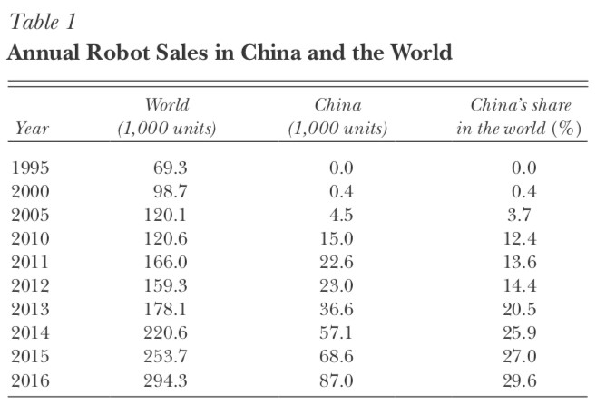
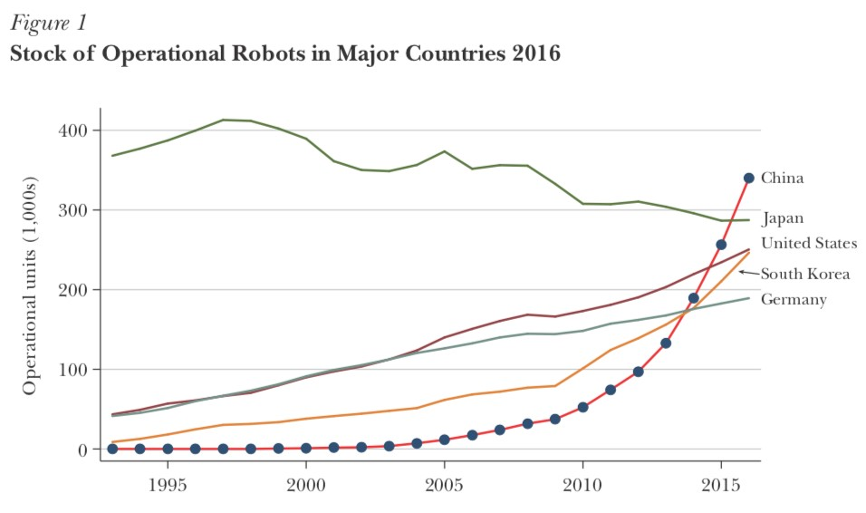
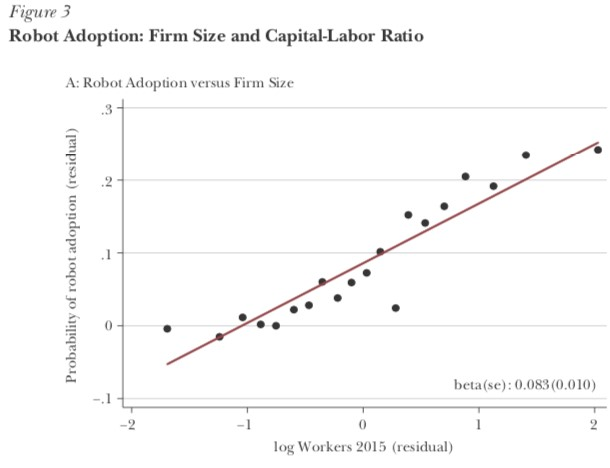
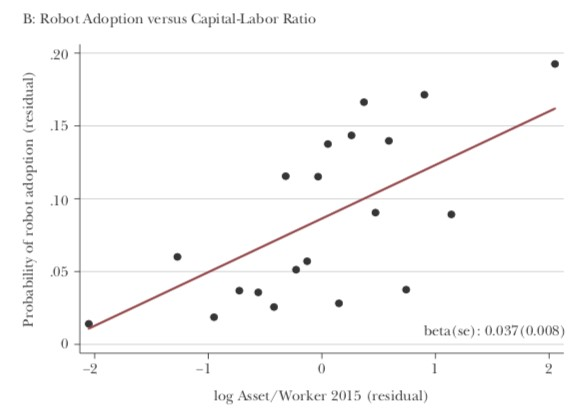

The Rise of Robots in China (2)
This article is mainly focused on stating the fact that there is a dramatic rising in robot adoption in China and explaining the phenomenon from both supply and demand side including government, market and job task factors. To approve their points about the rise of robots in China, they conducted the China Employer-Employee Survey (CEES) in Guangdong and gave a more detailed analysis.
China’s Annual sales of robots have risen sharply in the past 20 years. As shown in Table 1, China’s share of annual robot sales only account for 0.4 percent of the world total in 2000, but it changed to 29.6 percent only after 16 years.

The same growth rate also applied to the stock of operational robots for China. Figure 1 shows this data for the top 5 five robot markets in the world-China, Japan, the United States, South Kore, and Germany. Before 2015, China was the country with the least operational robots among these five countries but ranked the top one in 2016. The shocking change happened only in two years. At the same time, robotics technology is advancing rapidly with the increasing number of registered robotics firms.

However, there were not many differences appeared between China’s industrial composition of operational robot stock with other major countries. According to Figure 2, the automotive and electronics industries are the leaders when comes to adopting robots.

An explanation for the rise of robots from the supply is a demographic deficit is emerging in China, even though “demographic dividend” brought China the success as the “world’s factory” in the past few decades. The working-age population is declining gradually, and the labor cost is no longer cheap anymore. Meanwhile, a large-scale expansion of college enrollments is also changing the skill composition of the labor force. All these challenges push China’s manufacturers to automate, use machinery, and adopt robots. The Chinese government is also aggressively promoting robot adoption by setting national goals and providing subsidies. From the demand side, people in China have an overall positive perception of robots because government documents rarely mention the threat of job replacement and Chinese people have an obsession with science and technology due to painful historic memory caused by the inferiority of technology in the past.
To prove these explanations, Hong Cheng and Hongbin Li conducted the China Employer-Employee Survey (CEES) in Guangdong which is China’s most important industrial province. Because of the limitation of the survey’s result about robot adoption across industry and region, they decided to investigate firm-level correlates of robot adoption. As shown by Figure 3, firms’ size and capital-labor ratio are positively correlated with the probability of robot adoption.


Firm characteristics will also contribute to different patterns in robot adoption. This article looked at 12 factors involving government, market factors and the mix of tasks at the firm while firms’ size and capital-labor ratio within the same industry and province are controlled.

15 percent of people who received the survey confessed that government industrial policies affected their adoption decisions. But cell 1 in Table 2 shows that state-owned enterprises will not be more likely to adopt robots. It might because they are less responsive to market forces. Cell 2 shows that CEO being a member of the Party is positively correlated with labor adoption, which can prove the effect of government policies.
When it comes to market factors, cell 3 shows that the wage bill is positively correlated with robot adoption, while labor union presence does not have a positive correlation with robot adoption. It might be attributed to the lack of independence of unions in China. Cell 5 shows that voluntary worker turnover is positively correlated with robot adoption, while involuntary turnover is not. Because robot adoption usually leads to involuntary turnover but is caused by voluntary turnover. In addition, quality control seems to have no correlation with robot adoption behavior, as shown by cells 6 and 7. While cells 8 and 9 suggest a week correlation between production growth and robot adoption. Last but not least, job tasks make a difference in robot adoption as well. Based on the coefficient of cells 10, 11 and 12, it can be concluded that robots are more prevalent at firms requiring more manual tasks, but not those requiring more routine or abstract tasks.
To conclude, the phenomenal change in the Chinese robot market combining with a leading position in the production and consumption of automotive and electronics (the two leading industries in robot adoption) indicates that China will play a more important role in the global robot market in the future. Driven by government policies and pressure from labor shortage or rising labor costs, robot adoption in China shows a continually increasing trend against the threat of job replacement.
Photo from: Unsplash
Original Article: Cheng, Hong, Ruixue Jia, Dandan Li, and Hongbin Li (2019): “The Rise of Robots in China”, Journal of Economic Perspectives, 33(2), pp. 71-88.